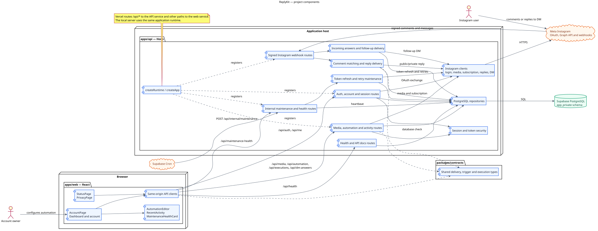

ReplyKit project UML
Current web app, API, Instagram integration, persistence, and scheduled recovery.
Components
How the browser, API modules, Meta clients, PostgreSQL, and scheduler connect.

Data model
Main tables and foreign-key relationships in the private PostgreSQL schema.

Main flow
Connecting an account, configuring a rule, delivering replies, recording DM answers, and recovering safe retries.